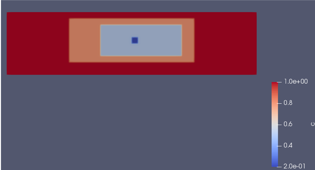

- insideThe value of the variable inside each box (one value per box or a single value for all boxes)
C++ Type:std::vector<Real>
Unit:(no unit assumed)
Controllable:No
Description:The value of the variable inside each box (one value per box or a single value for all boxes)
- int_widthThe value of the interfacial width between boxes
C++ Type:Real
Unit:(no unit assumed)
Controllable:No
Description:The value of the interfacial width between boxes
- larger_coordinate_cornersFor 1D, these are the right points; for 2D, these are the top right corners; for 3D, these are the front top right corners. The format is (corner1_x corner1_y corner1_z corner2_x corner2_y corner2_z ...)
C++ Type:std::vector<libMesh::Point>
Controllable:No
Description:For 1D, these are the right points; for 2D, these are the top right corners; for 3D, these are the front top right corners. The format is (corner1_x corner1_y corner1_z corner2_x corner2_y corner2_z ...)
- outside0The value of the variable outside the largest boxes
Default:0
C++ Type:Real
Unit:(no unit assumed)
Controllable:No
Description:The value of the variable outside the largest boxes
- smaller_coordinate_cornersFor 1D, these are the left points; for 2D, these are the bottom left corners; for 3D, these are the back bottom left corners. The format is (corner1_x corner1_y corner1_z corner2_x corner2_y corner2_z ...)
C++ Type:std::vector<libMesh::Point>
Controllable:No
Description:For 1D, these are the left points; for 2D, these are the bottom left corners; for 3D, these are the back bottom left corners. The format is (corner1_x corner1_y corner1_z corner2_x corner2_y corner2_z ...)
- variableThe variable this initial condition is supposed to provide values for.
C++ Type:VariableName
Unit:(no unit assumed)
Controllable:No
Description:The variable this initial condition is supposed to provide values for.
NestedBoundingBoxIC
NestedBoundingBoxIC allows setting the initial condition of a value of a field inside multiple nested bounding boxes and the value outside the outermost box. Each box is axis-aligned and is specified by passing in the x,y,z coordinates of the corners with the smallest and the largest coordinates for each box. The order of defining the box coordinates must be from the innermost to the outermost box. An interfacial width can be assigned for diffused interfaces. Partially overlapping boxes are not supported.
Example input:
[ICs<<<{"href": "../../syntax/ICs/index.html"}>>>]
[./c]
type = NestedBoundingBoxIC<<<{"description": "Specify variable values inside a list of nested boxes shaped axis-aligned regions defined by pairs of opposing corners", "href": "NestedBoundingBoxIC.html"}>>>
variable<<<{"description": "The variable this initial condition is supposed to provide values for."}>>> = c
smaller_coordinate_corners<<<{"description": "For 1D, these are the left points; for 2D, these are the bottom left corners; for 3D, these are the back bottom left corners. The format is (corner1_x corner1_y corner1_z corner2_x corner2_y corner2_z ...)"}>>> = '200 50 0 150 30 0 100 20 0'
larger_coordinate_corners<<<{"description": "For 1D, these are the right points; for 2D, these are the top right corners; for 3D, these are the front top right corners. The format is (corner1_x corner1_y corner1_z corner2_x corner2_y corner2_z ...)"}>>> = '210 60 0 280 80 0 300 90 0'
inside<<<{"description": "The value of the variable inside each box (one value per box or a single value for all boxes)"}>>> = '0.2 0.5 0.8'
outside<<<{"description": "The value of the variable outside the largest boxes"}>>> = 1
int_width<<<{"description": "The value of the interfacial width between boxes"}>>> = 3
[../]
[]
Initial condition of the variable defined in the above example.
Class Description
Specify variable values inside a list of nested boxes shaped axis-aligned regions defined by pairs of opposing corners
Input Parameters
- blockThe list of blocks (ids or names) that this object will be applied
C++ Type:std::vector<SubdomainName>
Controllable:No
Description:The list of blocks (ids or names) that this object will be applied
- boundaryThe list of boundaries (ids or names) from the mesh where this object applies
C++ Type:std::vector<BoundaryName>
Controllable:No
Description:The list of boundaries (ids or names) from the mesh where this object applies
- stateCURRENTThis parameter is used to set old state solutions at the start of simulation. If specifying multiple states at the start of simulation, use one IC object for each state being specified. The states are CURRENT=0 OLD=1 OLDER=2. States older than 2 are not currently supported. When the user only specifies current state, the solution is copied to the old and older states, as expected. This functionality is mainly used for dynamic simulations with explicit time integration schemes, where old solution states are used in the velocity and acceleration approximations.
Default:CURRENT
C++ Type:MooseEnum
Controllable:No
Description:This parameter is used to set old state solutions at the start of simulation. If specifying multiple states at the start of simulation, use one IC object for each state being specified. The states are CURRENT=0 OLD=1 OLDER=2. States older than 2 are not currently supported. When the user only specifies current state, the solution is copied to the old and older states, as expected. This functionality is mainly used for dynamic simulations with explicit time integration schemes, where old solution states are used in the velocity and acceleration approximations.
Optional Parameters
- control_tagsAdds user-defined labels for accessing object parameters via control logic.
C++ Type:std::vector<std::string>
Controllable:No
Description:Adds user-defined labels for accessing object parameters via control logic.
- enableTrueSet the enabled status of the MooseObject.
Default:True
C++ Type:bool
Controllable:No
Description:Set the enabled status of the MooseObject.
- ignore_uo_dependencyFalseWhen set to true, a UserObject retrieved by this IC will not be executed before the this IC
Default:False
C++ Type:bool
Controllable:No
Description:When set to true, a UserObject retrieved by this IC will not be executed before the this IC
Advanced Parameters
- prop_getter_suffixAn optional suffix parameter that can be appended to any attempt to retrieve/get material properties. The suffix will be prepended with a '_' character.
C++ Type:MaterialPropertyName
Unit:(no unit assumed)
Controllable:No
Description:An optional suffix parameter that can be appended to any attempt to retrieve/get material properties. The suffix will be prepended with a '_' character.
- use_interpolated_stateFalseFor the old and older state use projected material properties interpolated at the quadrature points. To set up projection use the ProjectedStatefulMaterialStorageAction.
Default:False
C++ Type:bool
Controllable:No
Description:For the old and older state use projected material properties interpolated at the quadrature points. To set up projection use the ProjectedStatefulMaterialStorageAction.